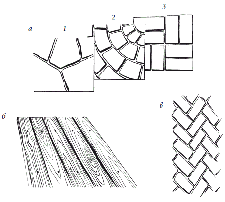

Патио.

Семейные и другие летние праздники приятно справлять на лоне природы. В загородном доме их можно устраивать не только на веранде. Лучше вынести столы из душного помещения, поставить на них несколько незатейливых блюд, украсить цветами и от души повеселиться до позднего вечера. Все это возможно, если на приусадебном участке найдется место не только для цветника, кустарников и плодовых деревьев, разбитых за домом огородных грядок, но и для уютного внутреннего дворика, специально предназначенного для приема гостей и отдыха на свежем воздухе.
Внешний вид и благоустройство патио зависят от пристрастий, материальных возможностей владельцев загородного дома, а также величины прилегающего приусадебного участка.
В не слишком роскошных загородных домах и коттеджах террасы и веранды смотрятся весьма привлекательно, однако при наличии на участке, окружающем дом, свободного места можно соорудить патио. Если говорить об определении, то это понятие пришло к нам из Америки, а туда оно проникло из стран Средиземноморья. Там так называют небольшую площадку под открытым небом, вымощенную плиткой (кирпичом, блоками, деревянными щитами и досками) и окруженную с одной стороны стеной. Это своеобразный внутренний дворик, который иногда примыкает к дому, но зачастую располагается на некотором отдалении от него. Чтобы не путаться в терминах, в наши дни специалисты подразумевают под патио своеобразную садовую гостиную под открытым небом.
Такое строение позволяет расширить внутреннюю площадь загородного жилища. В настоящее время стали очень популярны специальные «гостиные для приема гостей на даче» или «зеленые столовые-гостиные». Суть не в названиях, т. к. они обозначают любую мощеную (в отличие от газона) площадку, предназначенную для отдыха.
Гостиная под открытым небом может представлять собой совсем крошечную площадку, выложенную плиткой, на которой умещаются небольшой столик с парой стульев и тент от солнца. В то же время это может быть достаточно просторная гостиная-столовая. Тогда появится возможность разместить на ней большой обеденный стол с несколькими стульями, креслами или красивыми скамейками.
Допускается установление в патио даже особого очага для приготовления шашлыков с вертелами, но чаще гостиную окружают арками, перголами, клумбами, которые укрывают этот уголок от остальной зоны отдыха.
Планирование патиоУстройство гостиной под открытым небом не такое уж простое дело, оно требует много времени, немалых материальных вложений и тщательно продуманного плана застройки. Составление плана гостиной под открытым небом – ответственный этап в ландшафтном дизайне. Его продумывают таким образом, чтобы патио гармонично вписалось в общий план приусадебного участка. Приступая к планированию, следует продумать 6 ключевых моментов: назначение, место, размер, форму, характер покрытия и функционально-декоративные элементы данного строения.
План будущей постройки желательно начертить на миллиметровой бумаге. Сразу следует определиться, что предстоит строить: небольшое скромное патио для отдыха только членов семьи или солидную гостиную-столовую под открытым небом для частых вечеринок и встреч с многочисленными гостями. Ошибка в расчете может привести к тому, что со временем патио будет слишком маленьким, окажется неудачно вписанным в ландшафт или плохо затененным. Для большой семьи, все члены которой любят принимать друзей, лучше построить солидное патио – основательное и в то же время нарядное, полное воздуха и ощущения простора. Только в этом случае можно чувствовать себя в своем доме удобно и комфортно.
Очень важно заранее обдумать и рассчитать расположение и форму вашего уголка для отдыха. По конфигурации патио может быть самым разным, однако прямоугольная или квадратная конструкции многим кажутся унылыми, значительно оригинальнее будут смотреться неправильные линии и очертания. В этом случае дорожка, соединяющая открытую пристройку и дом, также должна иметь причудливый вид. Желательно, чтобы открытая площадка сочеталась с соседними дорожками и домом.
Для мощения гостиной под открытым небом не следует использовать слишком много материалов, различных по фактуре. В то же время в коттеджных постройках, если под патио отведен большой участок, не рекомендуется довольствоваться только одним-единственным. Подобное однообразие быстро утомит.
Для мощения патио подойдут почти все материалы, которые используют для покрытия пешеходных дорожек, кроме сыпучих материалов в виде измельченной коры и гравия, а также булыжника и брусчатки, по которым неудобно ходить. Для напольного покрытия лучше использовать бетонные плиты, кирпич, плитки, каменные блоки и плиты, мозаику и доски (рис. 35).

Материалы для постройки патио
Бетонные плиты
Главное их преимущество – они недороги. При использовании бетонных плит следует избегать неестественных расцветок и необычного рисунка. Оптимальный вариант – создать прямоугольный или квадратный дворик, используя гладкие и рифленые плиты. Допускается узорчатая или «колотая» поверхность, придающая напольному покрытию естественный вид.
Кирпичи
Кирпич тротуарный подходит для мощения дворика, созданного в традиционных стилях. Преимущества тротуарного кирпича в том, что им можно вымостить полы в патио самых причудливых очертаний.
Основное назначение клинкерного кирпича – мощение дорог, дорожек, дворов и полов внутренних двориков. К сожалению, клинкерный кирпич – материал достаточно дорогой. К тому же в силу высокой плотности клинкер обладает повышенной теплопроводностью.
Из некоторых видов кирпичей можно даже выложить круговой узор. Красиво смотрится клинкерный кирпич, изготовленный из особого сырья по особой технологии. В его производстве используют только тугоплавкие глины, а обжиг до спекания проводят при значительно более высоких температурах, чем принято для изготовления обычного строительного кирпича. По цвету клинкерный кирпич бывает самым разным – от желтого до темно-красного. Он морозостойкий (выдерживает от 50 до 100 циклов замораживания-оттаивания) и плотный (ниже марки М 400 его не выпускают).
Доски и щиты из досок
Деревянные настилы хорошо сочетаются с окружающей средой и растениями, которые высаживают вокруг патио. Дерево следует обязательно обработать антисептиком, в этом случае оно прослужит не менее 20 лет. Поскольку строительство настила – работа достаточно трудоемкая, то лучше использовать готовые щиты размером 60 ? 60 см из прочных досок в деревянной раме. Такие щиты лучше выкладывать в шахматном порядке.
Следует учесть еще один важный момент: комната под открытым небом требует особой обстановки. Так, маленькое патио будет иметь вычурный вид, если его перегрузить декоративными деталями. Перенасыщенность декоративно-функциональными элементами может привести к тому, что зеленая гостиная будет казаться тесной, в то же время она не должна походить на пустой и неуютный дом. Выход из положения легкой найти, если тщательно продумать всевозможные декоративные украшения в виде клумб, пергол, разнообразных покровных и вьющихся растений, которые будут окружать патио.